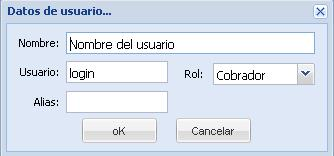

Para la administración de los usuarios se debe ir al menú Sistema, se selecciona opción de usuarios y se desplegará y se mostrarán los usuarios que están creados en el sistema.
Para crear un nuevo usuario se digitaran los datos correspondientes al usuario. Primero se digita el nombre, luego se pide el usuario, allí es donde especifica la cuenta con el que se va acceder desde el equipo que le será asignado, después se especifica la dirección del usuario y otros datos generales. Se selecciona el rol que desempeñará dicho usuario. Se guardan los cambios realizados y por último se le asigna una clave y se confirma dicha clave.
Si se desea editar un usuario se debe seleccionar el usuario en cuestión y presionar editar, o simplemente se posiciona sobre él y se da doble clic y se realizan los cambios de lugar.